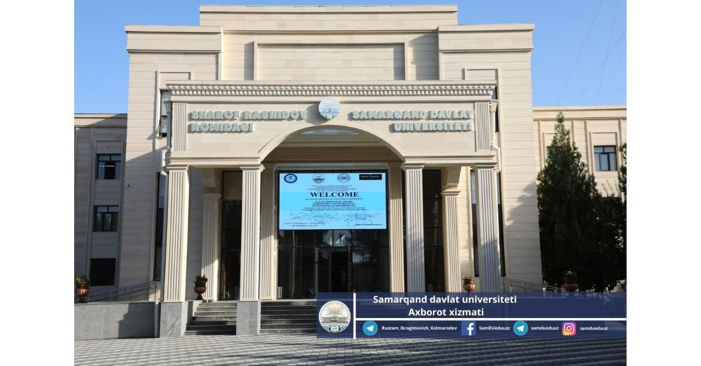

Sun’iy intellekt va raqamli texnologiyalar fakulteti talabalari davomatini nazorat qilish tizimi
Sharof Rashidov nomidagi Samarqand davlat universiteti (1927-yilda tashkil etilgan) fakulteti guruhlari uchun yagona davomat jadvali.

SamDU kampusi

Universitet binosi
Auditoriya
Tizim nima qiladi
- Guruhlar bo‘yicha davomatni ko‘rsatadi
- Dars qoldirish sabablarini qabul qiladi
- Hujjatlar va nizomni bir joyda saqlaydi
Davomatni belgilash tartibi
- O‘qituvchi guruhni tanlaydi
- Dars sanasini belgilaydi
- Kelgan va kelmagan talabalarni kiritadi
Kampus xaritasi
Bino ustiga bosing:
Eslatma: sababsiz 3 martadan ko‘p dars qoldirgan talaba dekanatga chaqiriladi.